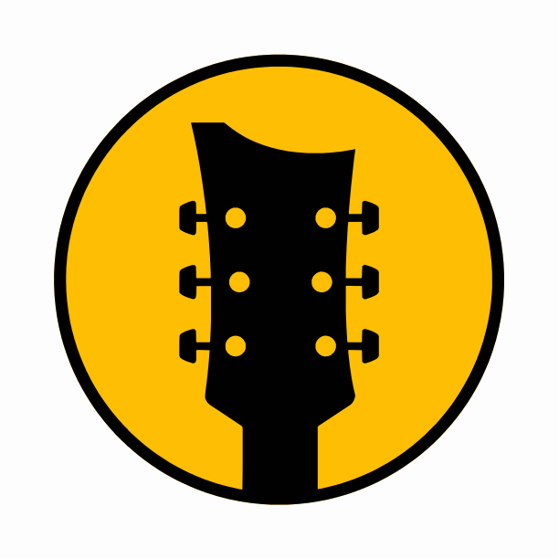

Browser Extension
YT Song 2 Tab
Open Ultimate Guitar results for the song currently playing.
Status
Preferred result: Bass
Preferred Tab Type
Choose the result type to open first on Ultimate Guitar.

Browser Extension
Open Ultimate Guitar results for the song currently playing.
Status
Preferred result: Bass
Choose the result type to open first on Ultimate Guitar.